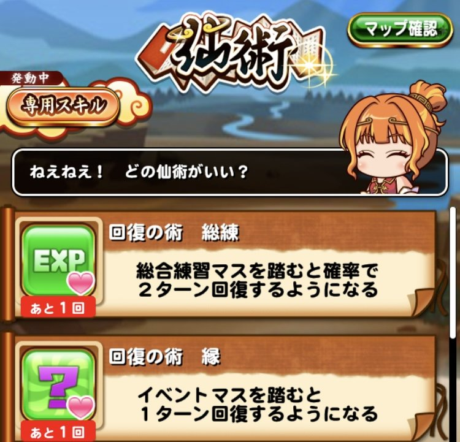
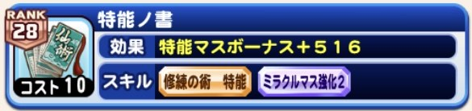
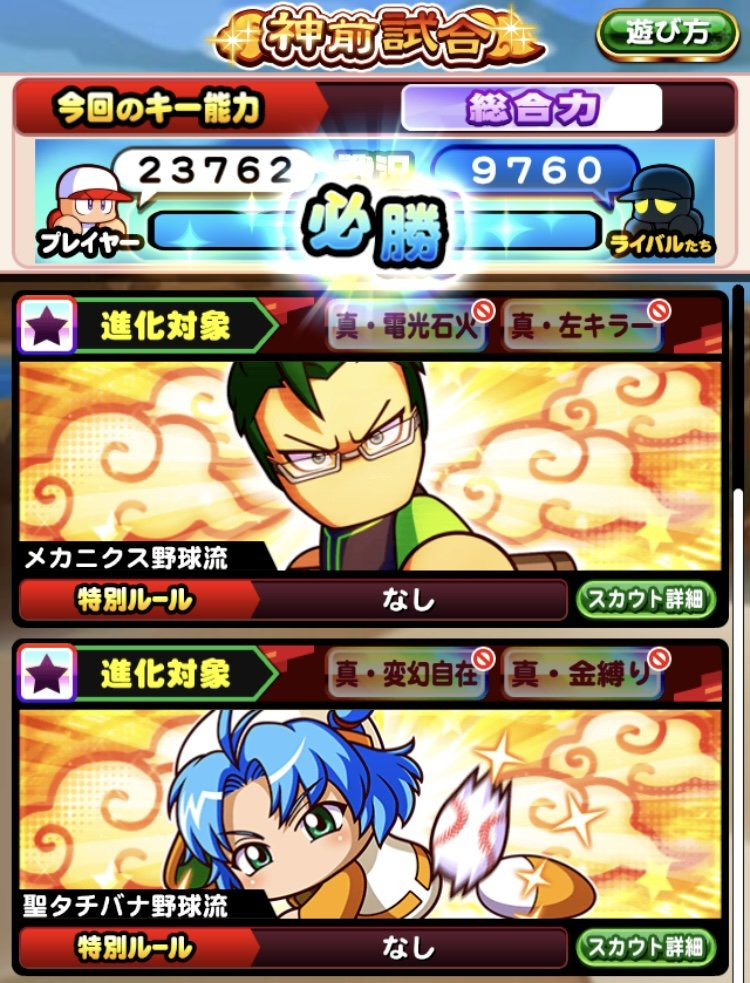
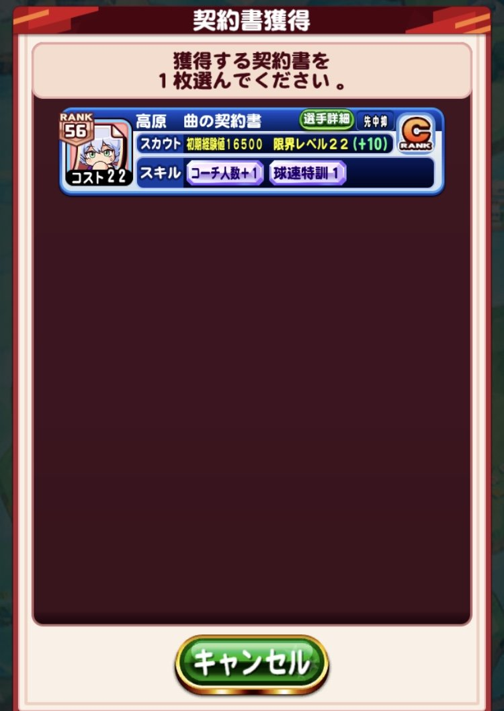
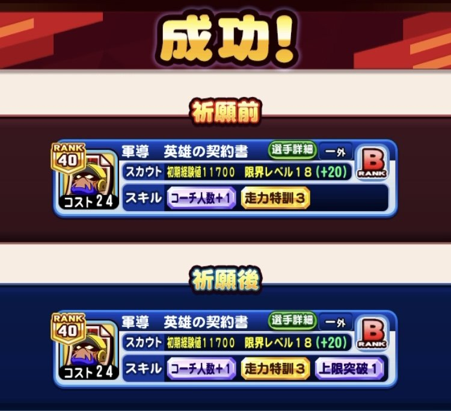

パワクエ 西球記
西球記の固有ギミック
パワクエ「西球記（さいきゅうき）」の固有ギミックをまとめました。
西球記専用ギミック「仙術」
仙術は、西球記だけで使える特別な技です。クエスト③から使えるようになり、エリアの開始時に自動で発動します。クエスト④から出てくる「桃マス」に止まると、その場でもう一度仙術を使えます。
自動発動の仙術は、一度発動すればそのクエストの間ずっと効果が続きます。発動中の仙術は、マップ画面の左上のボタンで確認できます。仙術によっては、使える回数に限りがあります。

仙術の種類
| 仙術 | 効果 | 必要な書 |
|---|---|---|
| マップ変動 | ||
| 袋変換の術 | ゴールマスのアイテム袋のレア度が上がる | 袋ノ書 |
| 錬金の術 | 今いるマスの周り2マスを金マスに変える | － |
| 空白変換の術 | 周り2マスの空白マスを、野手特訓マスか投手特訓マスに変える（どちらになるかはランダム） | 空白ノ書 |
| 自動発動 | ||
| 回復の術 野訓 | 野手特訓マスに止まると、確率で1ターン回復 | 野訓ノ書 |
| 回復の術 投訓 | 投手特訓マスに止まると、確率で1ターン回復 | 投訓ノ書 |
| 回復の術 総練 | 総合練習マスに止まると、確率で2ターン回復 | － |
| 回復の術 縁 | イベントマスに止まると、1ターン回復（マイナスイベントマスでも効果を発揮） | － |
| 回復の術 金 | 金マスに止まると、2ターン回復 | 金ノ書 |
| 回復の術 空白 | 空白マスに止まると、確率で1ターン回復 | － |
| 回復の術 戦 | 神前試合マスに止まると、2ターン回復 | － |
| 能力アップ | ||
| 修練の術 特能 | 特殊能力マスの効果をその場で発動 | 特能ノ書 |
| 修練の術 野手 | 野手特訓マスの効果をその場で発動 | － |
| 修練の術 投手 | 投手特訓マスの効果をその場で発動 | － |
| 修練の術 総合 | 総合練習マスの効果をその場で発動 | － |
| 呼応の術 | スカウトマスの効果をその場で発動 | 呼応ノ書 |
| 移動 | ||
| 郷雲の法 | ボス戦マスのとなりのマスへ移動（ボス戦マスが2つ以上ある時はランダム） | － |
| 星雲の法 | スタートマスへ移動 | － |
- 錬金の術で金マスに変わるのは、総合練習・野手特訓・投手特訓・特殊能力・スカウト・イベント・ミラクルの各マスです。それぞれ対応する金マスになります。
- 郷雲の法と星雲の法は、ターンを使わずに移動できます。移動した先で突発イベントが起こることもあります。
仙術指南ノ書
表の「必要な書」にある仙術は、そのままでは使えません。西球記でだけ手に入る専用アイテム「仙術指南ノ書」を持っていくと、書についているスキルで対応する仙術が使えるようになります。

西球記専用マス「神前試合マス」
神前試合マスは、クエスト③から出てくる西球記だけのマスです。止まると相手チームを選んで、自分で操作して試合をします。

試合の結果によって、次の2つがもらえます。
- 契約書：勝つか引き分けると、相手チームに応じた契約書を最大2枚もらえます。

キャンセルを選ぶと契約書を入手できないので注意！ - 特殊能力の進化：「必勝」か、10点差以上で勝つと、チームメイトの特殊能力が1段階進化します。
特殊能力の進化には、次のルールがあります。
- 1回の神前試合で進化するのは、1人につき1つまでです。新しい特殊能力を覚えることはありません。
- 相手チームごとに、進化先の真・超特殊能力が決まっています。その進化元になる超特殊能力を先に覚えていると、そちらが優先して進化します。
- 真・超特殊能力以外の特殊能力は、どのチームと試合をしても進化することがあります。
- 専用アイテムを持っていくと、特殊能力が進化する人数が増えます。
仙術の「回復の術 戦」が発動していると、神前試合マスに止まるたびに2ターン回復します。
西球記専用ゴール「祈願エンディングマス」
祈願エンディングマスは、クエスト⑥から出てくる西球記だけのゴールマスです。ここに着くとクエストクリアになり、さらにそのクエストの途中で手に入れたアイテムを「祈願」できます。
「祈願」が成功すると、次のどちらかの効果が得られます。どちらになるかはランダムで、自分では選べません。
- アイテムに新しいスキルが付く
- アイテムに付いているスキルが1つグレードアップする

「祈願」には、次のルールがあります。
- 変わるのはアイテムに付くスキルだけです。アイテムの効果・ランク・レアリティ・コストは変わりません。
- 「祈願」は失敗することがあります。失敗しても、アイテムや付いていたスキルが無くなることはありません。
西球記の攻略ページ
 重要アイテム一覧※11/25更新!
重要アイテム一覧※11/25更新!
 神前試合まとめ※11/19更新!38校の進化対象・
神前試合まとめ※11/19更新!38校の進化対象・ 虹特の査定まとめ※11/24更新!17種類の査定と
虹特の査定まとめ※11/24更新!17種類の査定と おすすめ契約書&コーチ+4厳選解説※11/24更新!狙い方と
おすすめ契約書&コーチ+4厳選解説※11/24更新!狙い方と ミッション報酬西球記の105件を
ミッション報酬西球記の105件を西球記のクエスト・周回ページ


西球記の攻略（トップ）に戻る